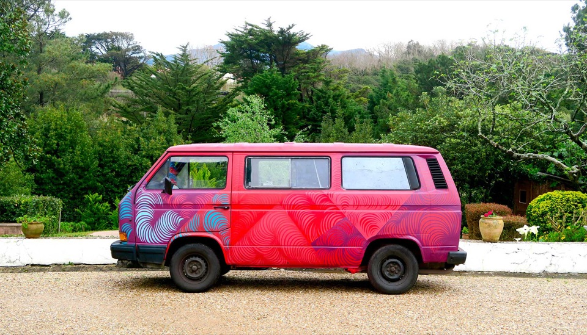
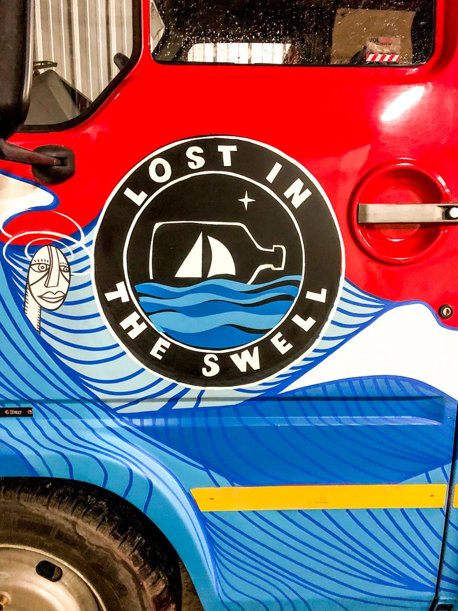
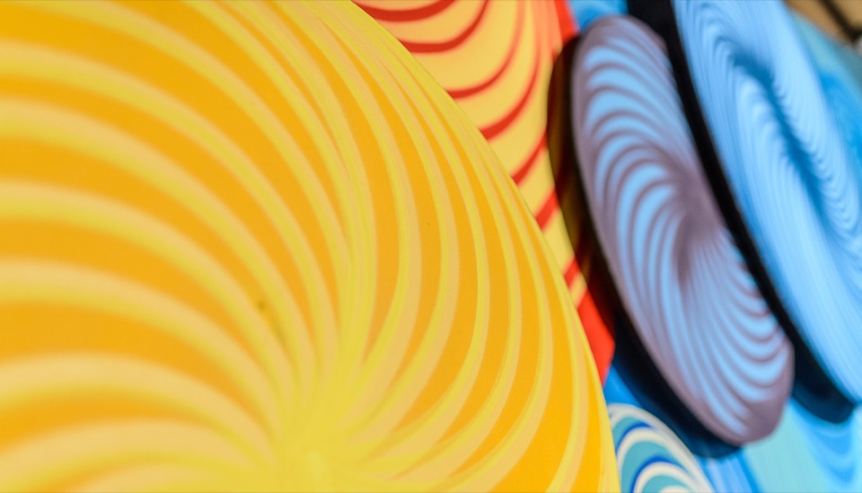

Œuvres
Peintures, dessins, planches et objets.
De la toile à la planche de surf, Delwood prolonge dans l'atelier ce que la rue et le mur lui ont appris. Peinture Golden, encres, gravures et stylo à pointe fine : une écriture graphique qui traverse les supports.

Architecture de la pensée, 2019
Explosion 1
Mont moderne
La traversée des Pyrénées, série de dessins de cols, 2022


Au-delà de la toile et du mur, Delwood customise des objets et des supports atypiques : planches, véhicules, mobilier. Chaque pièce reste unique.

